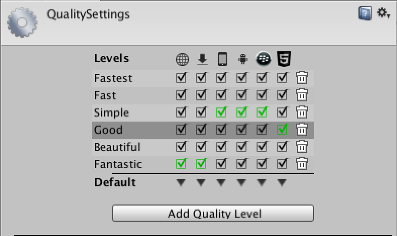
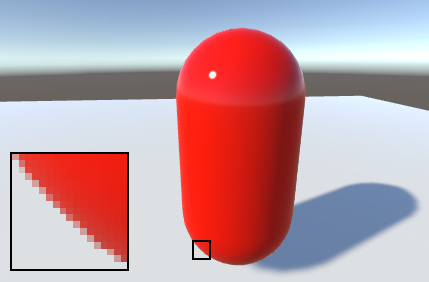

Quality
Unity allows you to set the level of graphical quality it attempts to render. Generally speaking, quality comes at the expense of framerate and so it may be best not to aim for the highest quality on mobile devices or older hardware since it tends to have a detrimental effect on gameplay. Use the Quality settings (menu: Edit > Project Settings, then select the Quality category) to select the quality level in the Editor for the chosen device. It is split into two main areas: the Quality matrix appears at the top; and below it, the settings for the selected quality level appear.
Unity lets you assign a name to a given combination of quality options for easy reference. The rows of the matrix let you choose which of the different platforms each quality level applies to. The Default row at the bottom of the matrix is not a quality level in itself but rather sets the default quality level used for each platform (a green checkbox in a column denotes the level currently chosen for that platform). Unity comes with six quality levels pre-enabled but you can add your own levels.

To delete an unwanted quality level, use the trashcan icon (the rightmost column).
To select a quality level for editing, click on its name in the matrix. Its definitions appear in the panel below the settings and you can modify any settings you need to:
To define a new Quality level, click the Add Quality Level button and type the name for the new level in the Name property box.
Then you can choose which of the quality options documented in the following sections you need to update or set:
Rendering
| Property | Function |
|---|---|
| Pixel Light Count | Set the maximum number of pixel lights when Unity uses Forward Rendering. |
| Texture Quality | Choose whether to display Textures at maximum resolution or at a fraction of this (lower resolution has less processing overhead). The options are Full Res, Half Res, Quarter Res and Eighth Res. |
| Anisotropic Textures | Choose if and how Unity uses anisotropic Textures. The options are Disabled, Per Texture and Forced On (that is, always enabled). |
| AntiAliasing | Choose the level of antialiasing that Unity uses. The options are Disabled, 2x Multi Sampling, 4x Multi Sampling and 8x Multi Sampling. |
| Soft Particles | Enable this option to use soft blending for particles? See Soft Particles for more information. |
| Realtime Reflection Probes | Enable this option to update reflection probes during gameplay. |
| Billboards Face Camera Position | Enable this option to force billboards to face the camera while rendering instead of the camera plane. This produces a better, more realistic image, but is more expensive to render. |
| Resolution Scaling Fixed DPI Factor | Downscales the device's screen resolution below its native resolution. For more details, see Android Player settings and iOS Player settings. |
| Texture Streaming | Enable Texture mipmap streaming. |
Anti-aliasing
Anti aliasing improves the appearance of polygon edges, so they are not "jagged", but smoothed out on the screen. However, it incurs a performance cost for the graphics card and uses more video memory (there's no cost on the CPU though). The level of anti-aliasing determines how smooth polygon edges are (and how much video memory it consumes).


However, built-in hardware anti-aliasing does not work with Deferred Shading or HDR rendering. For these cases, you'll need to use Antialiasing Image Effect.
Soft Particles
Soft Particles fade out near intersections with other Scene geometry. This looks much nicer, but it's more expensive to compute (more complex pixel shaders), and only works on platforms that support depth textures. Furthermore, you have to use Deferred Shading or Legacy Deferred Lighting rendering path, or make the camera render depth textures from scripts.


Shadows
| Property: | Function: | |
|---|---|---|
| Shadowmask Mode | Choose the shadowmask behavior when using the Shadowmask Mixed lighting mode. Use the Lighting window (menu: Window > Rendering > Lighting Settings) to set this up in your Scene. | |
| Distance Shadowmask | Unity uses real-time shadows up to the Shadow Distance, and baked shadows beyond it. | |
| Shadowmask | Static GameObjects that cast shadows always cast baked shadows. | |
| Shadows | Choose which type of shadows to use. The available options are Hard and Soft Shadows, Hard Shadows Only and Disable Shadows. | |
| Shadow Resolution | Choose which resolution to render shadows at. The available options are Low Resolution, Medium Resolution, High Resolution and Very High Resolution. The higher the resolution, the greater the processing overhead. | |
| Shadow Projection | Choose which method to use for projecting shadows from a directional light. | |
| Close Fit | Renders higher resolution shadows but they can sometimes wobble slightly if the camera moves. | |
| Stable Fit | Renders lower resolution shadows but they don't wobble with camera movements. | |
| Shadow Distance | Enter the maximum distance from the Camera at which shadows are visible. Unity does not render shadows that fall beyond this distance. | |
| Shadow Near Plane Offset | Enter the offset shadow near plane to account for large triangles being distorted by shadow pancaking. | |
| Shadow Cascades | Choose the number of shadow cascades to use. The available options are No Cascades, Two Cascades, or__Four Cascades_. A higher number of cascades gives better quality but at the expense of processing overhead (see Directional Light Shadows for further details). | |
| Cascade splits | Adjust the cascade shadow split(s) by moving the vertical line between each cascade left or right. Depending on what value you chose for the Shadow Cascades setting, you can see two or four different colors. If Shadow Cascades is set to No Cascades, then this entire control is hidden. |
Other
| Property | Function |
|---|---|
| Blend Weights | Choose the number of bones that can affect a given vertex during an animation. The available options are 1 Bone, 2 Bones and 4 Bones. |
| V Sync Count | Choose to synchronize rendering with vertical blanks or not to synchronize at all. Unity can synchronize rendering with the refresh rate of the display device to avoid tearing artifacts. The available options are Every V Blank, Every Second V Blank, or Don't Sync. |
| Lod Bias | Set the level-of-detail (LOD) bias. LOD levels are chosen based on the onscreen size of an object. When the size is between two LOD levels, the choice can be biased toward the less detailed or more detailed of the two Models available. This is set as a fraction from 0 to +infinity. When it is set between 0 and 1 it favors less detail. A setting of more than 1 favors greater detail. For example, setting LOD Bias to 2 and having it change at 50% distance, LOD actually only changes on 25%. |
| Maximum LOD Level | Set the highest LOD that the game uses. See Maximum LOD level for more information. |
| Particle Raycast Budget | Set the maximum number of raycasts to use for approximate particle system collisions (those with Medium or Low quality). See Particle System Collision Module. |
| Async Upload Time Slice | Set the amount of CPU time in milliseconds per frame to spend uploading buffered textures to the GPU. See Async Texture Upload. |
| Async Upload Buffer Size | Set the size in MB for the Async Upload buffer. See Async Texture Upload. |
Maximum LOD level
Unity does not use Models which have a LOD below the MaximumLOD level and omits them from the build (which saves storage and memory space). Unity uses the smallest LOD value from all the MaximumLOD values linked with the Quality settings for the target platform. If an LOD level is included, then Models from that LODGroup are included in the build and always loaded at runtime for that LODGroup, regardless of the Quality setting being used. As an example, if LOD level 0 is used in any Quality setting then all the LOD levels are included in the build and all the referenced Models load at runtime.
Tearing
The picture on the display device is not continuously updated, but rather the updates happen at regular intervals much like frame updates in Unity. However, Unity's updates are not necessarily synchronized with those of the display, so it is possible for Unity to issue a new frame while the display is still rendering the previous one. This results in a visual artifact called "tearing" at the position onscreen where the frame change occurs.

It is possible to get Unity to switch frames only during the period where the display device is not updating, the so-called "vertical blank". The V Sync Count option in Quality settings synchronizes frame switches with the device's vertical blank or optionally with every other vertical blank. The latter may be useful if the game requires more than one device update to complete the rendering of a frame.